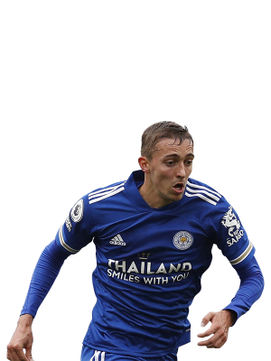

Expected points per gameweek - 4.82
Expected points per million - 0.82
Kieran Trippier is our pick for the best defender, with an expected points of 4.82 he ranks first out of all defenders, playing under Eddie Howe he has really took a step forward, being given the freedom to venture forward whilst having strong teammates that help him to pick up the clean sheet points. He is by far the best defender and a must have player.
Touchline rating 10/10.
Expected points per gameweek - 4.44
Expected points per million - 0.60
Joáo Cancelo is our pick for the second best defender, with an expected points of 4.44 he ranks second out of all defenders, playing in one of the best teams Man City have ever had and continually giving attacking returns, he is another one of the must have players in defence.
Touchline rating 10/10.
Expected points per gameweek - 4.06
Expected points per million - 0.80
Taking a big step down in terms of xp, at third we have Gabriel. Playing in an excellent Arsenal team that continues to perform and looks like a genuine title contender, Gabriel is Arsenal's main target at set-pieces meaning he's a certain for regular clean sheets whilst always offering the potential for a goal or two. despite this he is still almost .4 xp off of Cancelo so we cannot call him a must have, however with value of 0.80 he's an excellent third or fourth choice defender in your team.
Touchline rating 8/10.

Expected points per gameweek - 4.13
Expected points per million - 0.92
Timothy Castagne is our pick for the Defender position, with an expected points of 4.13 he ranks fourth out of all defenders, meaning purely on points he is not the best. However, it is his value that makes him such an appealing option. at 4.5m he is 1.4m cheaper than Trippier and 2.9m cheaper than Cancelo is, making him by far the best value defender in the whole of FPL and a must have for any team. Furthermore Leicester City have struck a rich vein of form, that barring an injury, would lead to Castagne becoming an even better option in the near future.
Touchline rating 9/10
Expected points per gameweek - 4.03
Expected points per million - 0.82
Fabian Schar is our pick for the second best value defender. With xp and value of 4.03 and 0.82 respectively, he is an extremely similar FPL player to Gabriel but wins second place in regards to value defenders due to him being slightly cheaper than Gabriel. If you're looking for double Newcastle defence you cannot go wrong with Schar and trippier
Touchline rating 8/10
Expected points per gameweek - 3.53
Expected points per million - 0.78
Kurt Zouma is the perfect fourth or fifth choice defender, returning a respectable if not mighty xp of 3.53. It is really the value and potential for Zouma that you are buying into. West Ham have one of the best defences in regards to xg conceded this season but have slightly underperformed so it is likely that Zouma will start to increase his xp over the next gameweeks and at 4.5m he allows you to spend money elsewhere.
Touchline rating 7/10